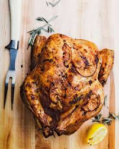

Grilled Chicken Recipe

Grilled Chicken Perfection
Grilled chicken is a timeless favorite, offering a delicious balance of
smoky char and juicy tenderness.
This recipe transforms simple
ingredients into a flavorful masterpiece, perfect for any occasion.
Ingredients
- 2 tablespoons brown sugar
- 2 large cloves garlic, chopped
- 2 teaspoons salt
- 1 teaspoon black pepper
- 10 chicken drumsticks
- 2 tablespoons vegetable oil
- ½ cup finely chopped onion
- ¾ cup ketchup
- 2 tablespoons white wine vinegar
- 2 tablespoons Worcestershire sauce
Steps
-
Mash brown sugar, garlic, salt, and pepper together in a mortar and
pestle to form a paste. Spoon paste into a resealable plastic bag. Add
chicken, coat with paste, squeeze out excess air, and seal the bag. For
best results, marinate in the refrigerator at least 1 hour to overnight.
-
When ready to cook, heat oil in a small saucepan over medium heat. Add
onion and sauté until softened, about 5 minutes. Stir in ketchup,
vinegar, and Worcestershire sauce. Bring to a simmer and cook until
flavors blend, about 10 minutes.
-
Meanwhile, preheat an outdoor grill for medium heat and lightly oil the
grate. Remove chicken from the bag.
-
Cook chicken on the preheated grill until brown, 3 to 5 minutes, turning
once halfway through. Turn off one of the burners and move chicken over
indirect heat. Maintain the temperature at 300 to 350 degrees F (150 to
175 degrees C).
-
Cook chicken for 20 minutes, turning halfway through. Baste with sauce,
then continue to cook, basting every 10 minutes, until chicken is no
longer pink at the bone and the juices run clear, 20 to 25 more minutes.
An instant-read thermometer inserted near the bone should read at least
165 degrees F (74 degrees C).
Home